|
Vektordaten können über den wfs (Web Feature Service) oder
als Datei importiert werden.
Vektordaten (*.gml und *.shp) können über die Menüleiste via
Projekt >  Ebene aus Datei hinzufügen
geladen werden.
Innerhalb des Dialoges hat der Nutzer die Möglichkeit, die gewünschten Daten
vom Server zu importieren.
Über den Dialog
Projekt > Ebene hinzufügen > Vektordaten >
Datei
können Dateien von lokalen Speicherorten importiert werden. Ebene aus Datei hinzufügen
geladen werden.
Innerhalb des Dialoges hat der Nutzer die Möglichkeit, die gewünschten Daten
vom Server zu importieren.
Über den Dialog
Projekt > Ebene hinzufügen > Vektordaten >
Datei
können Dateien von lokalen Speicherorten importiert werden.
Auf den wfs wird wie folgt zugegriffen:
Im Dialogfenster
Ebene hinzufügen
den Eintrag
Vektordaten > WFS
markieren und auf 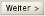 klicken.
Innerhalb des nächsten Dialoges entweder aus den vorkonfigurierten Services den
gewünschten Service auswählen, oder selbigen als URL manuell eingeben und auf
klicken.
Im Anschluss daran aus der Liste
verfügbare Objekt-Arten
die Objekt-Art auswählen, welche als neue Ebene dem Projekt hinzugefügt werden
soll.
Die gewünschte Ebene durch klicken auf 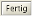 laden.
Es besteht vor dem Laden der Ebene zusätzlich die Möglichkeit, diese nach
bestimmten Kriterien zu Filtern und nur die Ergebnisse dieser Abfrage in einer neuen
Ebene darzustellen. Hierfür nicht auf sondern auf
klicken.
Im darauf folgenden Dialog können anschließend verschiedene attributive
oder/und räumliche Filter definiert werden, nach denen die zu importierende Ebene
durchsucht werden soll.
• Attributive Filter
Diese Filterart durchsucht die Attribute eines Objektes nach zuvor vom Nutzer
definierten Kriterien.
Über den Button 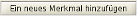 kann eine
Merkmals-Liste zusammengestellt werden, wobei die Merkmale untereinander über
und
(Voreinstellung) oder
oder
verknüpft werden können.
Werden die einzelnen Merkmale mit
und
verknüpft, werden nur Objekte ausgegeben, welche alle angegebenen Merkmale
enthalten. Wird die Einstellung
oder
gewählt werden alle Objekte ausgegeben, welche eines der angegebenen Merkmale
enthalten.
Pro Merkmal können folgende Einstellungen vorgenommen werden:
Die
Eigenschaften
repräsentieren die vorhandenen Attribute eines Objektes, welche über den
Operator-Typ
(> | ≥ | ≤ | < | = | is like) mit einem
Wert
verknüpft werden.
Ein Attribut kann innerhalb einer Abfrage auch mehrmals mit verschiedenen
Wertebereich-Eingrenzungen ausgewählt werden. Wird als Operator
is like
verwendet, kann zusätzlich festgelegt werden, ob die Groß- und
Kleinschreibung berücksichtigt werden soll (in diesem Fall muss das Häkchen
gesetzt werden).
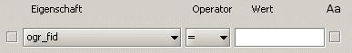
Bereits erstellte Merkmale können, nachdem vor ihnen das Häkchen gesetzt
wurde, durch den Button 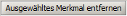 wieder entfernt werden.
• Räumliche Filter
Diese Filterart prüft die Objekte innerhalb der zu ladenden Ebene hinsichtlich
ihrer topologischen Eigenschaften. Die Abfrage kann sich entweder auf den aktuell
gewählten Kartenausschnitt (BBox), auf eine vorher selektierte Ebene oder eine
zuvor selektierte Geometrie (Objekt) als Vergleichs-Geometrie beziehen.
Folgende Abfragen sind möglich (Objekt,
Vergleichsgeometrie):
| BBox: |
Es werden alle Objekte ausgewählt, welche vollständig oder teilweise
innerhalb des aktuellen Kartenausschnittes liegen
|
| enthält (contains): |
Vollständig enthalten. Liefert Objekte, welche die
Vergleichs-Geometrie vollständig umgeben.
Die Grenzen der jeweiligen Objekte dürfen sich nicht
überlappen oder berühren.
|
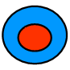
|
|
| überschneidet (crosses): |
Sich überschneiden mit. Liefert Objekte, welche sich mit der
Vergleichs-Geometrie einige, aber nicht alle inneren Punkte teilen.
Die Dimensionalität der Verschneidungsmenge ist kleiner als die von
wenigstens einer der beiden Vergleichsgeometrien.
Gültig für: Fläche/Linie, Linie/Linie
|
| ist verschieden (disjoint): |
Liefert Objekte, welche die Vergleichs-Geometrie weder
berühren, sich mit ihr überlappen noch in dieser enthalten
sind.
|
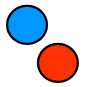
|
|
| ist gleich (equals): |
Räumlich identisch. Liefert Objekte, welche den gleichen Raum
wie die Vergleichs-Geometrie einnehmen.
Gültig für:
Fläche/Fläche, Linie/Linie, Punkt/Punkt.
|
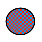
|
|
| schneidet (intersects): |
Liefert Objekte, welche einen oder mehrere Punkte gemeinsam haben.
Gültig für: Linie/Punkt, Linie/Linie, Fläche/Punkt,
Fläche/Linie
|
| überlagert (overlaps): |
Liefert Objekte, welche sich mit der Vergleichs-Geometrie einige
aber nicht alle Punkte teilen.
Die Dimensionalität der Verschneidungsmenge ist gleich der, der
beiden Vergleichsmengen.
Gültig für:
Fläche/Fläche, Linie/Linie
|
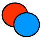
|
|
| berührt (touches): |
Liefert Objekte, welche die Grenzen der Vergleichs-Geometrie
berühren und/oder teilen.
Ausnahme: Punkt/Punkt.
|
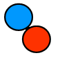
|
|
| ist enthalten (within): |
Liefert Objekte, welche vollständig in der Vergleichs-Geometrie
enthalten sind. Die Grenzen dürfen sich berühren und
überlagern.
Gültig für: Fläche/Fläche, Fläche/Linie,
Fläche/Punkt, Linie/Linie
|
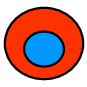
|
|
| außerhalb (beyond): |
Liefert Objekte welche sich außerhalb eines bestimmten Radius zur
Vergleichsgeometrie befinden.
|
| innerhalb (Dwithin): |
Liefert Objekte welche sich innerhalb eines bestimmten Radius zur
Vergleichsgeometrie befinden.
|
Nachdem ein oder mehrere Filter definiert wurden, müssen sie im nächsten
Schritt erstellt werden. Dazu im Register
Filter
auf 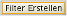 klicken: der zusammengestellte Filter wird
angezeigt und kann abschließend noch einmal überprüft werden, auch jetzt
kann die Ebene bereits durch das Klicken auf in
das Projekt geladen werden. Es können in einem letzten Schritt zusätzlich noch
Veränderungen hinsichtlich Titel, Name und Kurzbeschreibung vorgenommen werden.
|